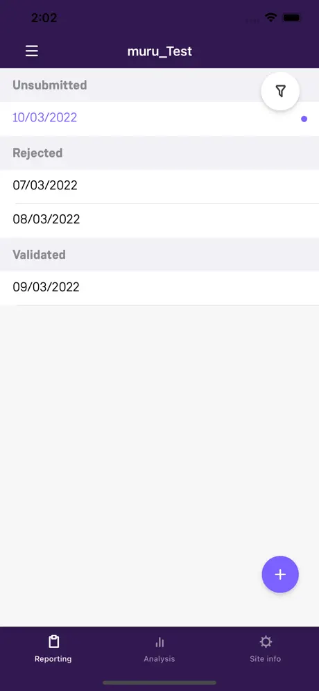
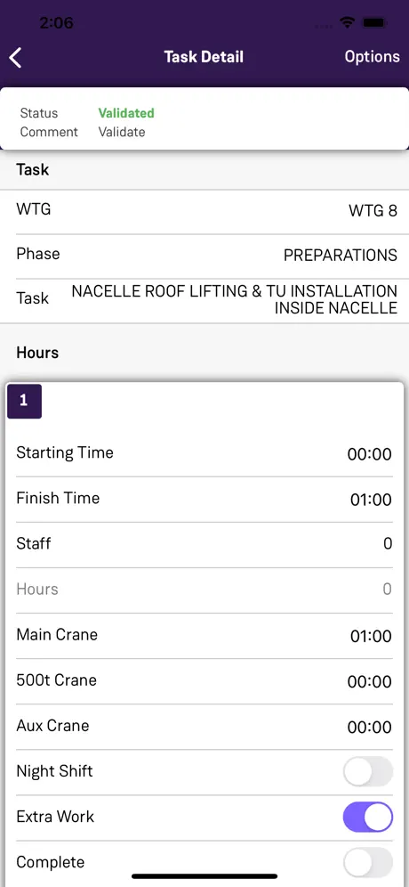

Offline-first labour reporting for wind farm construction
SmartSite shows Siemens Gamesa what's happening on its wind farm construction sites as it happens: activity reports, progress tracking, deviations from plan, and lead times compared across regions. The data comes from subcontractor crews standing at the bottom of a turbine, often with no usable network. Most of the interesting decisions in this app come from that.
About the source code: SmartSite is a Siemens Gamesa product that Infosys delivered. The code belongs to the client, so there's no public repository. The architecture description below is my own, in my own words.
Context & Scope
Wind farms get built where the wind is: ridgelines, near the coast, open plains. Those places are picked for the weather, and mobile coverage is an afterthought. Construction takes a long time, the subcontractors change from phase to phase, and the business needs to know what work was done, when, and where it went off plan.
SmartSite is where that gets recorded. Crews report activities and timesheets. Supervisors track progress against the construction sequence and log deviations with a cause. The company sees lead times and can compare how different regions are doing. The first release only worked online, and it quickly became clear what that meant on a wind farm: people filled in their reports from memory in a hotel room three days later. That was the data quality problem the app was meant to fix.
What made it hard
- Offline support was added to a live app. It wasn't part of the original design. The app was already deployed and in use, so we had to change how data was saved underneath people using it, without breaking the online behaviour they relied on.
- Timesheets are money. A lost or duplicated timesheet turns into a payment dispute with a subcontractor. "It'll probably sync eventually" isn't good enough here. A crew needs to know their entry is safe as soon as they tap save.
- The data is nested and editable. An activity has several tasks, and a task can have several timeframes. All of it has to be created, edited and deleted offline and then synced, which is a lot harder than queueing a flat list of events.
- The security requirements changed partway through. To meet compliance, sign-in had to move from single-factor to multi-factor authentication. Users are often offline, so their sessions had to cope with that.
- Enterprise client delivery. Fixed release trains, acceptance testing by the client, and a Xamarin.Forms codebase that had been around for years and served a global operation.



App Store listing screenshots.
Architectural Blueprint
The main rule: for the crew, the database on the phone is the source of truth, and the network catches up later. Saving a timesheet is a local database transaction that finishes straight away. Syncing is a separate step the user can see. The app shows what's waiting to upload, and the user taps sync when they have signal. Showing that step to the user was a product decision as much as a technical one.
Amber is the write path that must never lose a record. Sync is a visible step on purpose, because a crew that can see how many entries are waiting is more likely to trust the app.
The main decisions
- Record each change as an entry in a log. Offline edits are saved as an ordered list of create, edit and delete entries, each with a key generated on the phone. We didn't just change the row and mark it dirty. Deletes are why: once a row is deleted locally, there's nothing left to hold a "deleted" flag. Tombstones and a change log are the only reliable way to sync that.
- The phone's key prevents duplicates. Each entry keeps the same key every time it's sent, so if a batch is retried after the connection drops halfway, the server ignores the repeat. Duplicate submissions are the worst thing that can happen in a labour reporting app, and this design rules them out without relying on careful retry code.
- The same validation online and offline. The business rules run the same way either way. If only the server validated, a crew could fill in a whole shift offline and have it rejected at sync, by which time they've forgotten the details. Catching problems while they're typing is the only approach that doesn't waste their time.
- A sync button instead of silent background sync. Most apps sync silently, and we chose not to. When a timesheet affects someone's pay, a visible pending count and a sync button they press themselves earn more trust than a background process. The crew knows exactly what's safe and what isn't.
- MFA that doesn't lock out offline users. The app is used in places with no signal, so moving to multi-factor meant designing token lifetimes and re-authentication carefully. A session that expires in the field must never put work saved on the phone at risk. Being signed in and keeping data safe are separate problems, and we kept them separate.
Engineering Breakthrough
Adding reliable offline saving to a shipped app
Writing an offline layer wasn't the hard part. Putting one underneath a live app, while crews were in the middle of a construction programme, was. We couldn't freeze development for a rewrite, and the migration couldn't risk losing data that hadn't synced yet.
- First, send every write through one place. Before adding any offline behaviour, we moved the timesheet writes that were spread around the code behind a single repository interface. That refactor shipped on its own, changed nothing for users, and could be reverted by itself. After it, adding offline support was a change in one place instead of a rewrite across the app.
- Make the local database the main copy, and let sync catch up. With that one entry point in place, writes went to the local database, and the network read from the change log afterwards. The online path didn't go away. It became the quick version of the same path.
- Ship the nested cases on purpose. We added several tasks per activity and several timeframes per task at the same time as the offline work, because they affect each other. Sync has to handle a child record created offline under a parent that was also created offline and doesn't have a server ID yet. Keys generated on the phone are what make that work.
- Test it with scripted network failures. A fake connectivity provider simulated clean drops, signal that kept coming and going, slow lossy links and disconnects in the middle of a request. There was also a test that killed the app during a database write. Without tests like these, "it works offline" is just something you hope is true.
Adding offline support to an existing app is mostly refactoring. Find where the app writes data, route all of it through one place, ship that with no change in behaviour, and only then change what's behind it. Teams that skip that dull first step end up solving the hard sync problems in a dozen places at once.
Scope & Impact
- Offline
- Timesheets can be created, edited and deleted with no connection, then synced when the user taps sync. This shipped into an app that was already deployed.
- MFA
- Sign-in moved from single-factor to multi-factor authentication for security compliance, and still works for offline users.
- Global
- Used on Siemens Gamesa wind farm construction sites around the world, and the reports compare how each region is doing.
- {{m_b_offline}}
- Share of timesheets entered while offline. This is my estimate from the field and wasn't measured by the app. Ask me how I got to it.
You can see the offline and MFA releases in the app's public release history. The last number is my own estimate, and it's labelled that way.